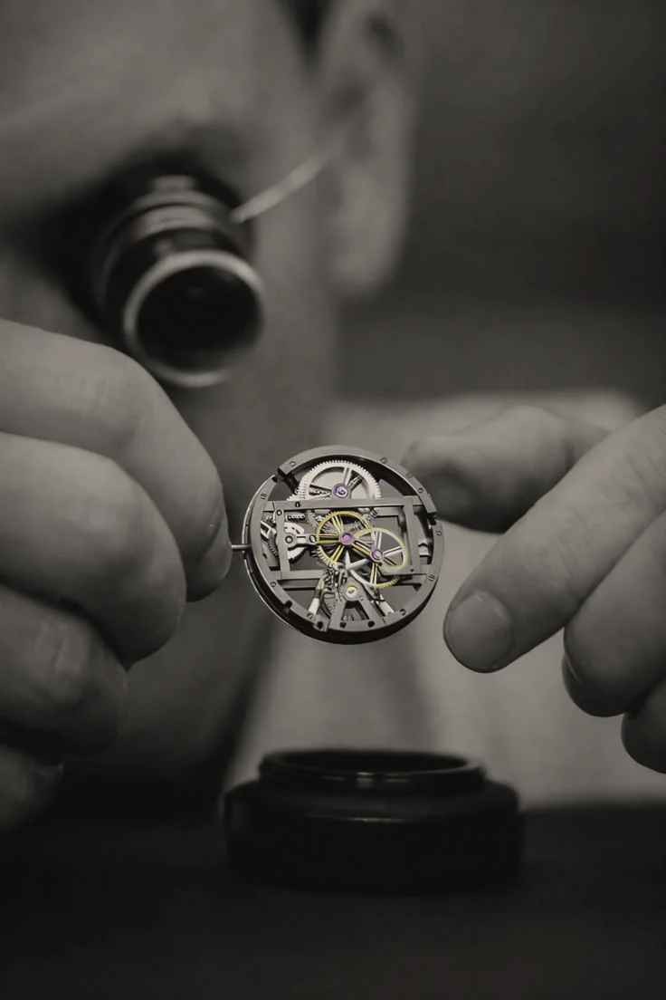
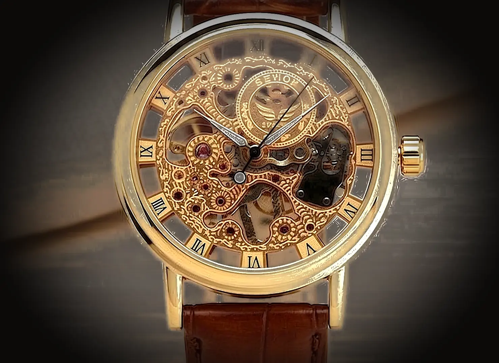
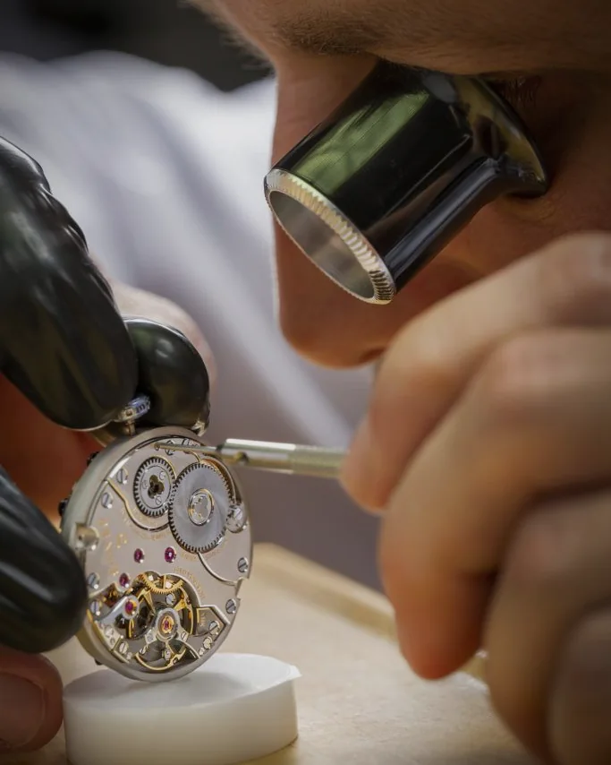
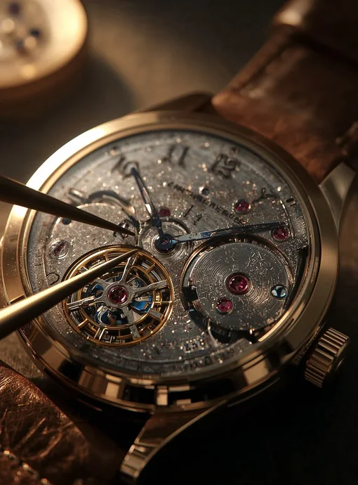
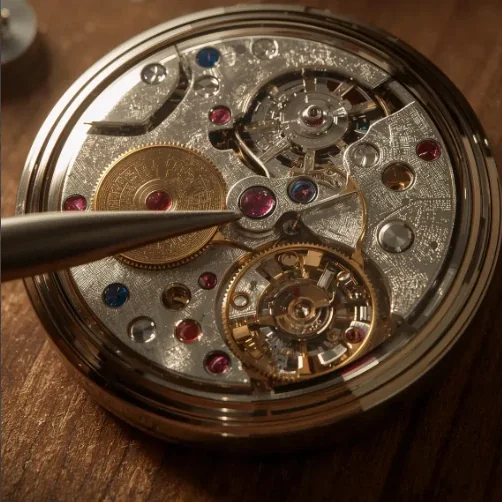
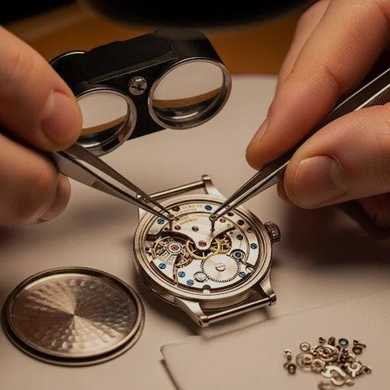
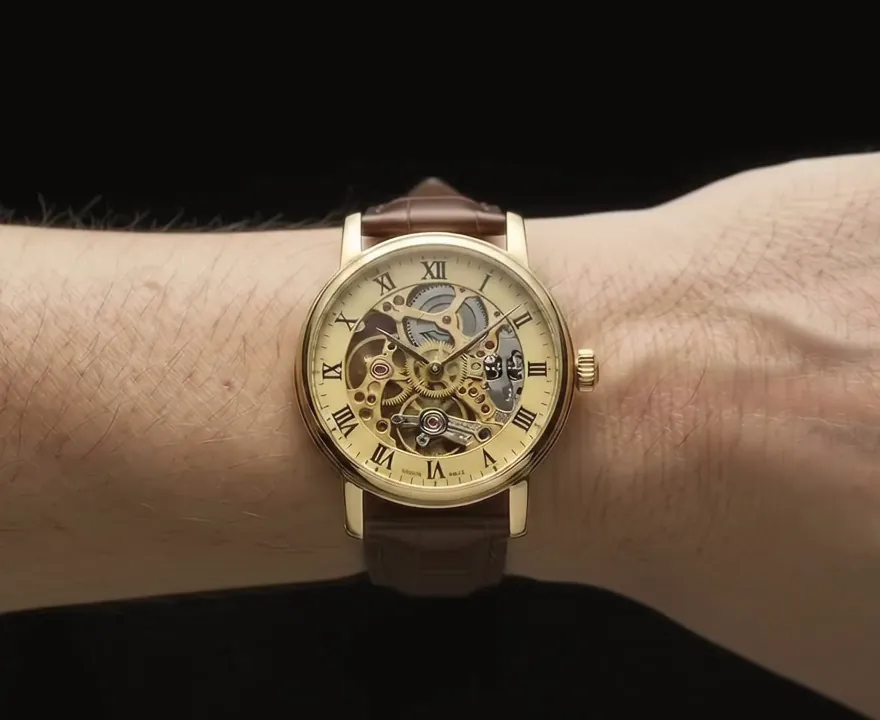
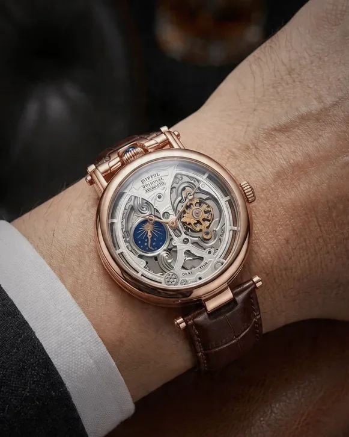
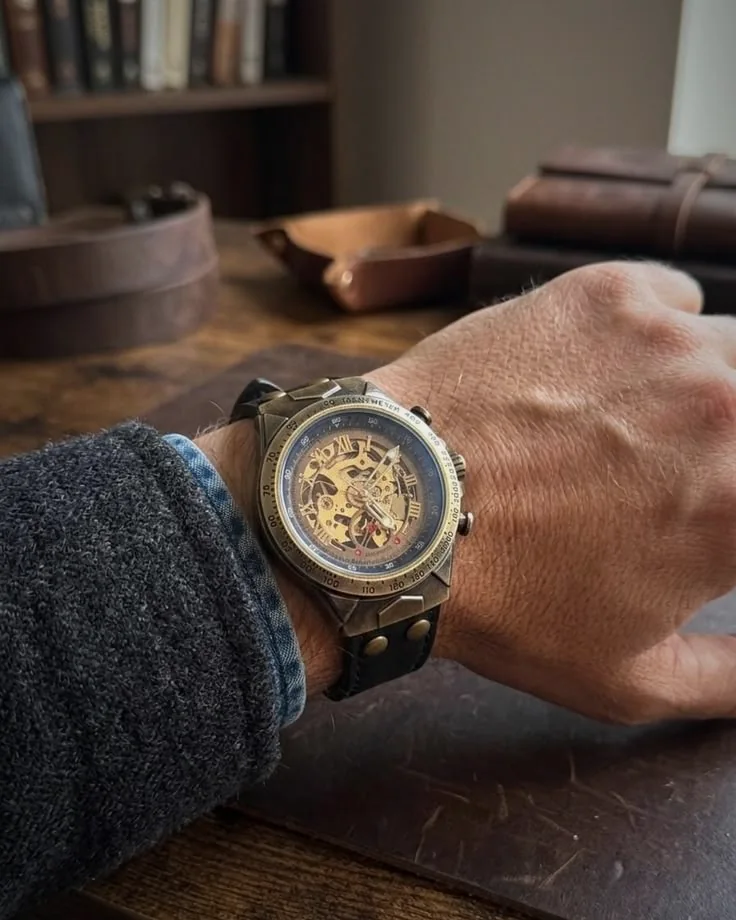
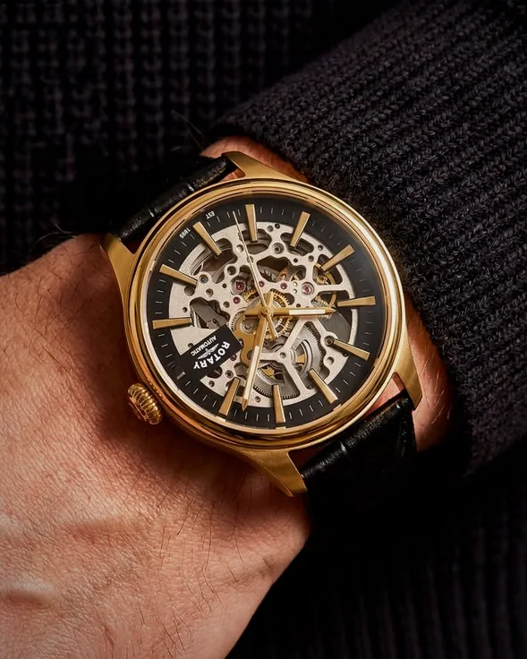

Crafted in darkness
Most of what makes it work, you will never see. It was finished as if you would.

A watch that transcends eras without losing its value.
Two hundred and seventeen parts, held by nothing.
Then each one, back in its place.

Most of what makes it work, you will never see. It was finished as if you would.

Each piece is made to order, at one bench, by one pair of hands, and fitted to the wrist that will wear it.
Every edge was cut for the moment the light arrives.




Four layers. Each one lifts, and each one returns.
Build your wrist.
Four more, finished the same way.
 Example
Example
Steel, blue dial, tan leather
$4,800
Order
ExampleRose gold, moon phase, brown leather
$6,900
Order
ExampleAged bronze, tachymeter, black leather
$3,600
Order
ExampleYellow gold, black dial, black leather
$5,400
OrderExamples. Names and prices to be replaced.
Join the waitlist$48,000
42 mm · 18k yellow gold
72-hour reserve · 217 components
Leave a name. We will write when it is time.